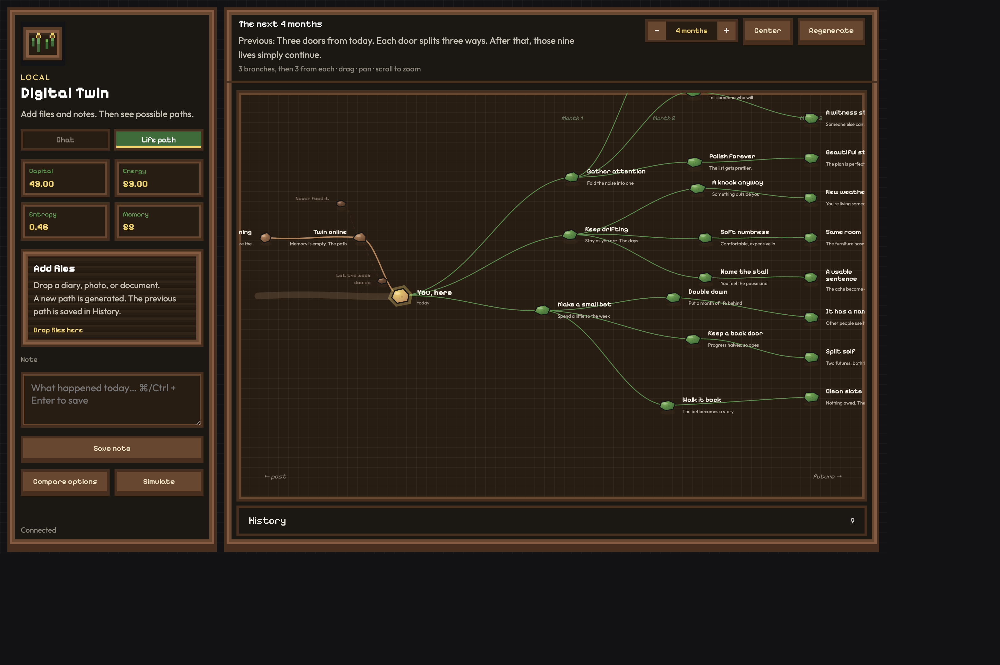

Add files
Drop diaries, PDFs, and images. They are chunked and stored locally.
Local
Add files and notes. Then see possible paths. A local twin with file memory, a physical state, and a branching life-path map.

Live demo requires your own OpenAI key and runs on your machine (uvicorn server:app --port 8787).
This page is a static preview for visitors.
Drop diaries, PDFs, and images. They are chunked and stored locally.
3 branches from today, then 3 from each. Drag and edit nodes. Previous paths stay in History.
Capital, energy, and entropy constrain deduction and simulation replies.